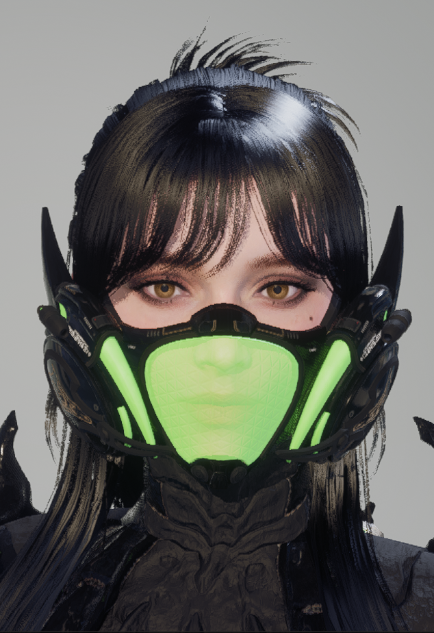

FREYNA Leofwin
A dealer of continuous damage who freely manipulates venom. She utilizes the venomous substances produced by her body to trap enemies in swamps of toxins. Ultimate Freyna is Freyna who has gained incredible power through the Ultimate Project. Affiliation: Colon Special Forces, Descendant Corps!
Real Name: Freyna Leofwin (shown on the in-game Ecive Bioscan HUD; Dr. Kate's journal spells it "Leofwyn")
Colon Code Name: No. 6
Voice Actor (EN): Sharlit Deyzac
All values: max level – Descendant stats Lv 40, weapons Lv 100 with 4 stars (Unique Ability Level 4), modules at max enhancement level.
Attributes
Toxic / Tech / Dimension (Q, V, Z + Passive = Tech / C = Dimension)
Skills
Q — Venom Trauma (Tech): Fires a Toxic Bullet, dealing damage to hit enemies. The Toxic Bullet explodes, creating a Toxic Puddle and inflicting Room 0 Trauma on those it hits. Room 0 Trauma deals continuous damage and applies Panic to nearby enemies.
C — Defense Mechanism (Dimension): Gains Plague Bodyarmor. Inflicts Room 0 Trauma on the attacking enemy. Room 0 Trauma deals continuous damage and applies Despair to nearby enemies. (converted by the Modules: Toxic Stimulation or Venom Injection)
V — Putrid Venom (Tech): Throw poison to create a Toxic Swamp. Enemies that touch the Toxic Swamp are inflicted with Room 0 Trauma and Venom-Soaked. Venom-Soaked enemies leave Toxic Footprints as they move. Toxic Footprints apply Room 0 Trauma to enemies on contact. Room 0 Trauma deals continuous damage and applies Decay to nearby enemies.
Z — Venom Baptism (Tech): Equips a Unique Weapon. Unequipped after all bullets are consumed or after a certain period of time has passed. Enemies hit by the Unique Weapon bullets are inflicted with Room 0 Trauma. Room 0 Trauma deals continuous damage and applies Nightmare to nearby enemies.
CONTAGION Links (Passive Skill, Tech): When an enemy inflicted with Room 0 Trauma is killed, it spawns a Toxic Puddle. Enemies that step in the Toxic Puddle are inflicted with Room 0 Trauma. Room 0 Trauma deals continuous damage and applies Toxic Reaction to nearby enemies.
Stats (Level 40):
Freyna: Max HP 1,402 / Max Shield 537 / Max MP 187 / DEF 2,083 / Shield Recovery Out of Combat 3.96 / Shield Recovery In Combat 3.3 /
Ultimate Freyna: Max HP 1,516 / Max Shield 671 / Max MP 187 / DEF 2,083 / Shield Recovery Out of Combat 3.96 / Shield Recovery In Combat 3.3 /
Research (Unlock):
Freyna: 16 Hours / 400,000 Gold / Freyna Enhanced Cells x1 (Acquisition: Vespers Hard - Ancient Giant Tree / Vespers Normal - The Shelter)
Ultimate Freyna: 1 Day 12 Hours / 900,000 Gold / Ultimate Freyna Enhanced Cells x1 (Obtainable through Research)
Freyna's Story:
Freyna served in Colon, the Special Forces of Albion Headquarters, where agents only used code names: she was No. 6, her long-time partner and lover O'Neal was No. 9. After an assassination mission against a Priest of the Order of Truth overseeing Vulgus experiments in Echo Swamp, the returning agents began transforming into Vulgus inside Room 0 and Freyna had to shoot them, O'Neal included. His last words were "You must live, Freyna." Only Freyna survived the venomous spores, thanks to her Arche, which produced an even stronger venom. Traumatized and unable to control her Arche, she was quarantined until a neutralizer was developed by the bioengineer Dr. Kate. Exclusive Equipment: Machine Gun with Venom Sensor, plus a suit with neutralizing filters that lets her fully control her toxins.
Ultimate Project: Carried out without Freyna's knowledge, pushed by her commander Sharen. Freyna faced the mastermind behind the Room 0 Incident, secured the Ancestors' anti-decay device and freed herself from the weight of her past. Ultimate Equipment: Arche Chemical Control Suit "Nightmare Dominator", based on Viessa's Ultimate equipment "Absolute-Zero", with a special chemical toxin filtration unit built with the Ancestors' technology. (Source: NEXON LIBRARY: FREYNA / ULTIMATE FREYNA)
Transcendent Skill Modules (max level, Lv 10)
(Rutile, Capacity 7 at Lv 10 max) Contagion: When an enemy inflicted with Room 0 Trauma is killed, a contagion of Room 0 Trauma surrounds it.
(Xantic, Capacity 6 at Lv 10 max) Neurotoxin Synthesis: Modifies the effects of Room 0 Trauma. Does not spread Poison, but inflicts ATK reduction and Weaken Regeneration.
(Xantic, Capacity 6 at Lv 10 max) Toxic Mixture: (Ultimate Freyna only) Modifies the Room 0 Trauma effect to Necrosis. Firearm ATK increases with the number of Necrosis stacks. Replaces the Passive Skill Contagion Links; at max Necrosis stacks, Firearm Critical Hit Rate also increases.
(Cerulean, Capacity 5 at Lv 10 max) Toxic Stimulation: Defense Mechanism skill conversion. Grants Plague Bodyarmor to nearby allies.
(Rutile, Capacity 4 at Lv 10 max) Venom Synthesis: Putrid Venom skill conversion. Leaves behind a Toxic Footprint after every step. Inflicts Room 0 Trauma on enemies coming in contact with Toxic Footprint.
(Rutile, Capacity 4 at Lv 10 max) Venom Injection: (Ultimate Freyna only) When using skill, continuously consumes resources to grant self Toxic Sense. While Toxic Sense is active, hitting an enemy with a firearm or a Skill inflicts Corrosion. Replaces Defense Mechanism; recovers Shield and increases Skill Power Modifier. Corrosion reduces the enemy's Toxin Resistance. (Most powerful Module, but... it consumes HP very fast! Increase HP, Shield + DEF)
Freyna's ULTIMATE Module:
Decimator Level 5 = max (Ultimate Module, Xantic, Arche Tech, Capacity 11 at Level 5):
When defeating an enemy inflicted with debuffs, Skill Power Modifier +5%[+] per defeated enemy for 10s (Up to 10 stacks)!
Freyna's Trigger Modules:
Infected Weapon (Massive Damage that scales with Freyna's Skill Power)!
Arche Infection: Time to Trigger 5s / Damage = Skill Power x (265.0~855.0)% / Damage Interval 1.0s
Exclusive Weapon: Damage = Skill Power x (95.0~475.0)%
(Trigger modules have no enhancement levels; the value ranges are exactly as published by Nexon.)
Freyna's Ancestor Module:
Dominator's Resolution (Ancestors Module, Main Slot, Capacity 16, no enhancement levels, Freyna + Ultimate Freyna only; Random Stat Booster) (for me personally = Skill Critical Hit Damage +134% and Skill Critical Hit Rate +87%)
Freyna is Effective Against:
Legion of Immortality (Weak against Toxic Damage)
Legion of Breach (No Elemental Weakness,... but Freynas Toxic Skills are scaling insanely here)!
Freynas Weapons:
Secret Garden a Non-Attribute / Special Rounds / Tactical Rifle with Tech + Dimension Buffs!
Unique Ability - Gardener:
When using a Dimension skill (Freyna: C - Defense Mechanism), recovers Custom Resource with a set chance.
When using a Tech skill (Freyna: Q - Venom Trauma, V - Putrid Venom, Z - Venom Baptism), grants the unique ability Pest Control with a set chance.
ATTACK Values for Level 100 (max) SG: Firearm ATK 10,534 / Fire Rate 480 / Weak Point Damage 1.77 / Effective Range (Drop-off start) 3,200 / Effective Range (Drop-off end) 6,200 / ATK Drop-off Modifier 0.4 / Max Range 15,000 / Hip Fire Accuracy 82.222 / Aimed Shot Accuracy 87.777 / Rounds per Magazine 48 / Reload Time 1.6 / Sprint Speed 800 / Movement Speed 540 / Movement Speed While Firing 360 / Movement Speed While Aiming 270 / Burst 10 / Firearm Critical Hit Rate 50 / Firearm Critical Hit Damage 2.25 / Attribute Status Effect Trigger Rate 5 / Multi-Hit Damage 0.1 /
Fallen Hope a Toxic / General Rounds / Assault Rifle:
Unique Ability - PERDITION:
Using a Toxic skill grants Toxin Aggregation to self.
While Toxin Aggregation is active, using a Ground DoT type skill grants Toxin Discharge to self.
While Toxin Discharge is active, hitting an enemy has a chance to activate Perdition on the target, dealing additional damage and inflicting Poison on enemies within range.
While Toxin Discharge is active, defeating an enemy has a chance to cause them to Explode, to deal additional damage and inflict Poison on nearby enemies.
The additional damage of Perdition increases proportionally to the combined stacks of Poison and Toxin Discharge inflicted on the target.
ATTACK Values for Level 100 (max) FH: Firearm ATK 12,813 / Toxic ATK 12,429 / Fire Rate 600 / Weak Point Damage 1.2 / Effective Range (Drop-off start) 3,500 / Effective Range (Drop-off end) 6,000 / ATK Drop-off Modifier 0.4 / Max Range 15,000 / Hip Fire Accuracy 83.333 / Aimed Shot Accuracy 88.888 / Rounds per Magazine 35 / Reload Time 1.7 / Sprint Speed 800 / Movement Speed 550 / Movement Speed While Firing 370 / Movement Speed While Aiming 280 / Pierce 10 / Firearm Critical Hit Rate 12 / Firearm Critical Hit Damage 1.7 / Attribute Status Effect Trigger Rate 4.55 / Multi-Hit Damage 1 /
Hive Master a Toxic / Special Rounds / Tactical Rifle:
Unique Ability - Colony Domination:
On hitting an enemy, grants Incubate to self.
At max Incubate stacks, removes Incubate and grants Incubation Complete to self.
While Incubation Complete is active, hitting an enemy removes Incubation Complete, inflicts Attach Bug on the target, and grants Refill Culture to self.
While Attach Bug is active, the Shock Bug attached to the target fires beams at nearby enemies at regular intervals to deal damage.
While Attach Bug is active, hitting a target reduces the Shock Bug beam firing interval and triggers a Discharge that inflicts damage and Stun on all enemies within range.
The damage dealt by the Shock Bug beam firing and the triggering of a Discharge increases proportionally to the applied targets.
ATTACK Values for Level 100 (max) HM: Firearm ATK 10,824 / Toxic ATK 7,092 / Fire Rate 600 / Weak Point Damage 2.2 / Effective Range (Drop-off start) 3,200 / Effective Range (Drop-off end) 6,200 / ATK Drop-off Modifier 0.4 / Max Range 15,000 / Hip Fire Accuracy 83.333 / Aimed Shot Accuracy 88.888 / Rounds per Magazine 50 / Reload Time 1.4 / Sprint Speed 800 / Movement Speed 550 / Movement Speed While Firing 380 / Movement Speed While Aiming 290 / Burst 10 / Firearm Critical Hit Rate 20 / Firearm Critical Hit Damage 1.2 / Attribute Status Effect Trigger Rate 4.6 / Multi-Hit Damage 0.65 /
Malevolent a Toxic / Impact Rounds / Hand Cannon:
Unique Ability - Malicious Pain:
On hitting an enemy, creates a Bladed Cog.
Bladed Cog bounces between multiple enemies to deal damage.
On hitting Weak Points, creates additional Bladed Cogs.
Firearm ATK = 46,349 / Toxic ATK = 19,467 / Fire Rate 176 / Weak Point Damage = 2.5 /
Malevolent does not feel good in my opinion. I would not play it!
SHADOW Sword a Toxic / Impact Rounds / Balanced Melee Weapon:
Unique Ability - Shadow Slash:
When the Special Attack button is pressed, charges the Weapon with energy, then dashes forward to deal damage and inflict Tow on all enemies within range using Shadow Dash. After dashing, swings the Weapon repeatedly to use Shadow Slash. On hit with Shadow Dash and Shadow Slash triggers additional attacks. As energy charges, increases Damage and Dash Distance.
ATTACK Values for Level 100 (max): Melee Weapon ATK 418,048 / Melee Weapon Toxic ATK 209,024 / Attack Speed 0.565 / Melee Weapon Critical Hit Rate 5 / Melee Weapon Critical Hit Damage 1.1 / Additional Attack Damage 1 / Melee Weapon Piercing Rate 0.04 / Melee Weapon Min. Piercing Rate 0.5 / Pierce 10 / Max Melee Weapon Attack Range Multiplier 2 / Movement Speed 600 / Sprint Speed 1,040 / Max Block Gauge 200 / Start Block Gauge Cost 10 / Maintain Block Gauge Cost 1.5 / Block Gauge Recovery Start Time 2 / Block Gauge Recovery Amount 40 / Block Efficiency 0.35 / Max Special Attack Gauge 200 / Special Attack Gauge Recovery Start Time 3 / Special Attack Gauge Recovery Amount 35 / Attribute Status Effect Trigger Rate 20 /
Want more Information about Weapons? There you go = https://tfd.nexon.com/en/library/weapons?tier=Tier3 (Official Info Source!)
I have indicated this TFD Webpage as Important and Useful for overall Information and Descendant "Module Build" Setups -> DESCENDANT.GG
Reactor:
TOXIC Mechanics Reactor (Toxic / Tech Boost): Increases Skill Power of all Tech Skills / Venom Trauma, Putrid Venom & Venom Baptism (Single Target Damage) /
TOXIC Phase Reactor (Toxic / Dimension): Increases Skill Power of the only Dimension Skill / Defense Mechanism /
External Components:
4 Piece (full) Plague Set (Plague Auxiliary Power / Plague Memory / Plague Processor / Plague Sensor):
2 Pieces: Tech Skill Power Boost Ratio +5% / Singular Skill Power Boost Ratio +5%
4 Pieces: Toxic Skill Power Boost Ratio +43,2%
4 Pieces: On acquiring Custom Resource, Toxic Skill Power Boost Ratio +21,6% (10 Seconds)
4 Pieces: Firearm Critical Hit Rate -24% / Firearm Critical Hit Damage -36,8%
Mutant Cells for Arche Tuning:
Toxin Cohesion (Versus Mobs)
Toxic Chain Catalyst (Versus Single Target, BOSS, Colossus)
Freyna's SKINS:
Vulgus Slayer: Dark-Fantasy + Science Fiction + Toxic Style! It's a non sexual / elegant themed skin! ⭐️⭐️⭐️⭐️⭐️
Toxic Plant Disposal Suit: This skin looks very (good) sexy it defines her beautiful body shape! ⭐️⭐️⭐️⭐️⭐️
Urban Sprinter: Short Tights on Freynas Calves, a wonderful sight! ⭐️⭐️⭐️⭐️
H1 Racing Suit: A tight sexy suit, but some details are not colored correctly via Paint! ⭐️⭐️⭐️
Exo Knight: If colored well, it can look very good on her! ⭐️⭐️⭐️⭐️⭐️
Oasis Party (Swimsuit): It looks just ⭐️⭐️⭐️⭐️⭐️⭐️⭐️ very good!
WEAPONS:
| Weapon Name | Element | Effective VERSUS |
|---|---|---|
| Ancient Knight (Assault Rifle) | 🔥Fire + Pierce | Ice Colossus / Sigma Sector |
| Divine Punishment (Assault Rifle) | 🔥Fire + Pierce | Ice Colossus / Sigma Sector |
| Enduring Legacy (Machine Gun) | 🔥Fire + Crush | Ice Colossus / Sigma Sector |
| Exterminator (Launcher) | 🔥Fire + Pierce | Ice Colossus / Sigma Sector |
| Greg's Reversed Fate (Tactical Rifle) | 🔥Fire + Burst | Ice Colossus / Sigma Sector |
| Restored Relic (Launcher) | 🔥Fire + Pierce | Ice Colossus / Sigma Sector |
| Truly Deadly Arson (Beam Rifle) | 🔥Fire + Pierce | Ice Colossus / Sigma Sector |
| Wave of Light (Scout Rifle) | 🔥Fire + Crush | Ice Colossus / Sigma Sector |
| Crime and Punishment (Balanced Melee Weapon) | 🔥Fire + Burst | Ice Colossus / Sigma Sector |
| A-TAMS (Anti-Material / Sniper Rifle) | ⚫None + Crush | Legion of Breach |
| Afterglow Sword (Sniper Rifle) | ⚫None + Crush | Legion of Breach |
| Executor (Shotgun) | ⚫None + Burst | Legion of Breach |
| Peace Maker (Hand Cannon) | ⚫None + Burst | Legion of Breach |
| Perforator (Hand Cannon) | ⚫None + Burst | Legion of Breach |
| Secret Garden (Tactical Rifle) | ⚫None + Burst | Legion of Breach |
| Smithereens (Shotgun) | ⚫None + Burst | Legion of Breach |
| The Last Dagger (Handgun) | ⚫None + Pierce | Legion of Breach |
| E-Buster (Submachine Gun) | ⚫None + Burst | Legion of Breach |
| Frenzied Locomotive (Machine Gun) | ⚫None + Crush | Legion of Breach |
| Albion Cavalry Gun (Machine Gun) | ❄️Chill + Crush | Legion of Darkness |
| Clairvoyance (Beam Rifle) | ❄️Chill + Pierce | Legion of Darkness |
| Deus Ex Manus (Power Melee Weapon) | ❄️Chill + Crush | Legion of Darkness |
| FrostWatcher (Scout Rifle) | ❄️Chill + Crush | Legion of Darkness |
| Hypernova (Balanced Melee Weapon) | ❄️Chill + Burst | Legion of Darkness |
| King's Guard Lance (Beam Rifle) | ❄️Chill + Pierce | Legion of Darkness |
| Piercing Light (Sniper Rifle) | ❄️Chill + Crush | Legion of Darkness |
| The Final Masterpiece (Handgun) | ❄️Chill + Pierce | Legion of Darkness |
| Whirlwind (Tactical Rifle) | ❄️Chill + Burst | Legion of Darkness |
| ERASER (Scout Rifle) | 💀Toxic + Crush | Legion of Immortality |
| Fallen Hope (Assault Rifle) | 💀Toxic + Pierce | Legion of Immortality |
| Hive Master (Tactical Rifle) | 💀Toxic + Burst | Legion of Immortality |
| Malevolent (Hand Cannon) | 💀Toxic + Burst | Legion of Immortality |
| Nazeistra's Devotion (Hand Cannon) | 💀Toxic + Burst | Legion of Immortality |
| Python (Submachine Gun) | 💀Toxic + Burst | Legion of Immortality |
| Shadow (Balanced Melee Weapon) | 💀Toxic + Pierce | Legion of Immortality |
| Shackles of Mortality (Hand Cannon) | 💀Toxic + Burst | Legion of Immortality |
| Sigvore's Proof (Launcher) | 💀Toxic + Pierce | Legion of Immortality |
| Blue Beetle (Scout Rifle) | ⚡Electric + Crush | Order of Truth |
| Hammer and Anvil (Shotgun) | ⚡Electric + Burst | Order of Truth |
| Thunder Cage (Submachine Gun) | ⚡Electric + Burst | Order of Truth |
| EXCAVA (Assault Rifle) | ⚡Electric + Pierce | Order of Truth |
| Voltia (Beam Rifle) | ⚡Electric + Pierce | Order of Truth |
| Eye of the Typhoon (Beam Rifle) | ⚡Electric + Pierce | Order of Truth |
| AXION Plains Map | Mixed Element Map | 75% Legion of Breach 15% Other Legions |
| AXION / Forbidden Sanctuary | Endgame Mission | Order of Truth |
Legion of Darkness = CHILL & PIERCE
Order of Truth = ELECTRIC & BURST
Legion of Breach = Elemental Adaption (Freyna melts them anyway) but Affinity (MODULE = Overwhelm) Weakness to CRUSH